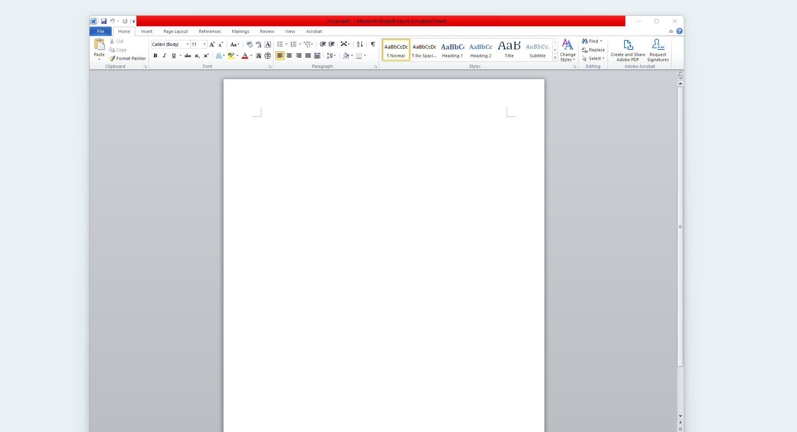
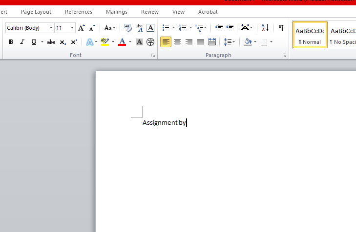
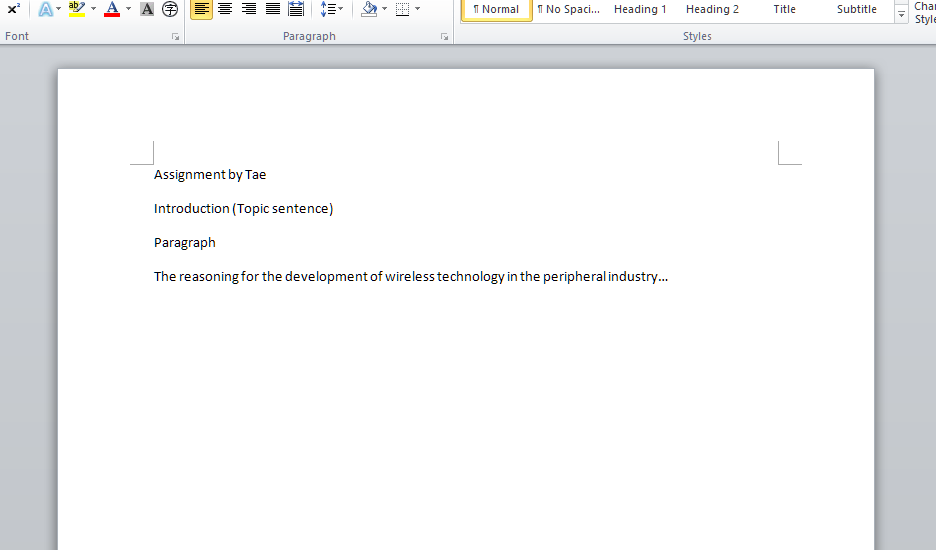
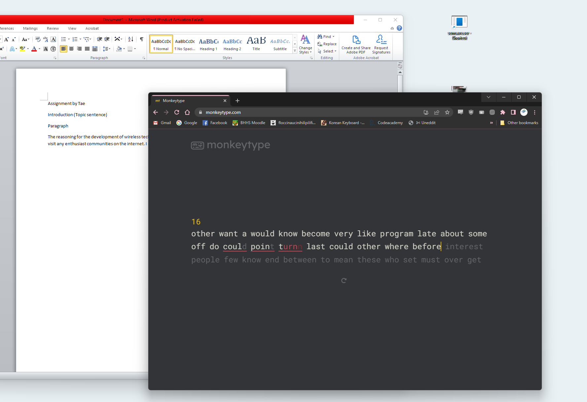
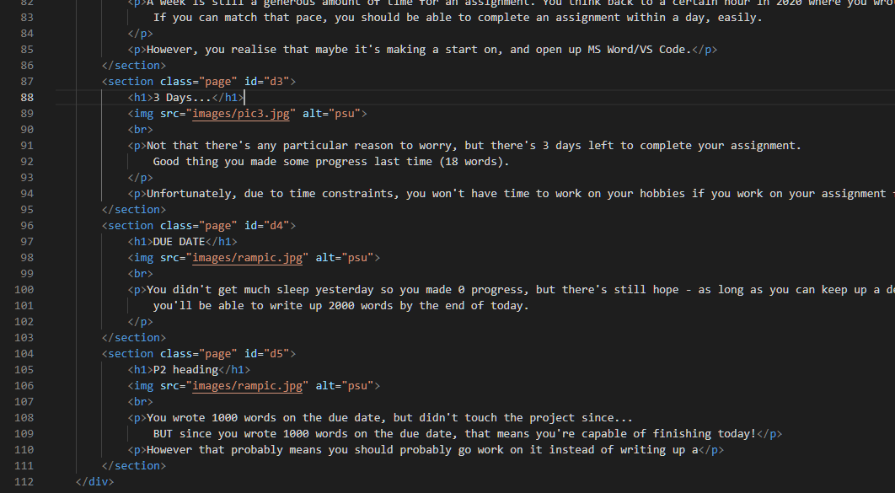

2 Weeks Left
There's still 2 entire weeks left! ^^ If you started your project now, you could complete it at a lesiurely pace. But there are so many other hobbies you could be working on, is it really a good idea to waste 2 entire weeks on a single assignment?
At your peak typing speed (100wpm), you'd be able to complete about 400-500 assignments in that time.
A Week's Left
A week is still a generous amount of time for an assignment. You think back to a certain hour in 2020 where you wrote (200) words. If you can match that pace, you should be able to complete an assignment within a day, easily.
However, you realise that maybe it's making a start on, and open up MS Word/VS Code.
3 Days...
Not that there's any particular reason to worry, but there's 3 days left to complete your assignment. Good thing you made some progress last time (18 words).
Unfortunately, due to time constraints, you won't have time to work on your hobbies if you work on your assignment for these next 3 days... is it worth it?
DUE DATE
You didn't get much sleep yesterday so you made 0 progress, but there's still hope - as long as you can keep up a decent speed of 80wpm, you'll be able to write up 2000 words by the end of today.
Late.
Last day of possible submission.
You wrote 1000 words on the due date, but didn't touch the project since... BUT since you wrote 1000 words on the due date, that means you're capable of finishing today!
However that probably means you should probably go work on it instead of writing up a [text ends here]